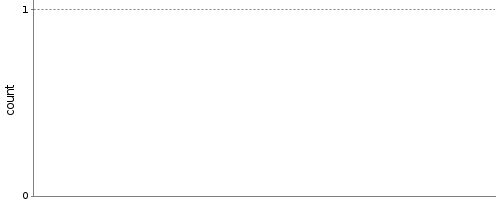

Skip to content
This site is a static archive, we moved to
Travis & GitLab CI
-
[Issue]
DISABLE AUTO REFRESH
Jenkins
All
C hostmaster - 2.x
Back to Dashboard
Status
Changes
Checkstyle Warnings
Git Polling Log
trend
W
Description
%
Checkstyle: 296 warnings found.
56
Build stability: No recent builds failed.
100
Build History
Project C hostmaster - 2
.x
Do a code review of hostmaster
This project is currently disabled
Checkstyle Trend

Enlarge
Configure
Recent Changes
Permalinks
Last build (#35), 4 yr 9 mo ago
Last stable build (#35), 4 yr 9 mo ago
Last successful build (#35), 4 yr 9 mo ago
Last completed build (#35), 4 yr 9 mo ago